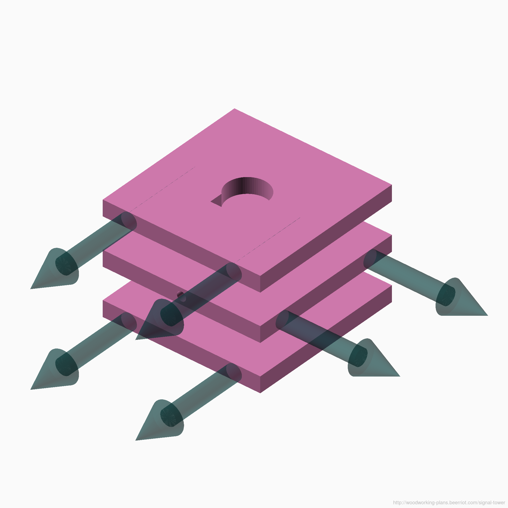
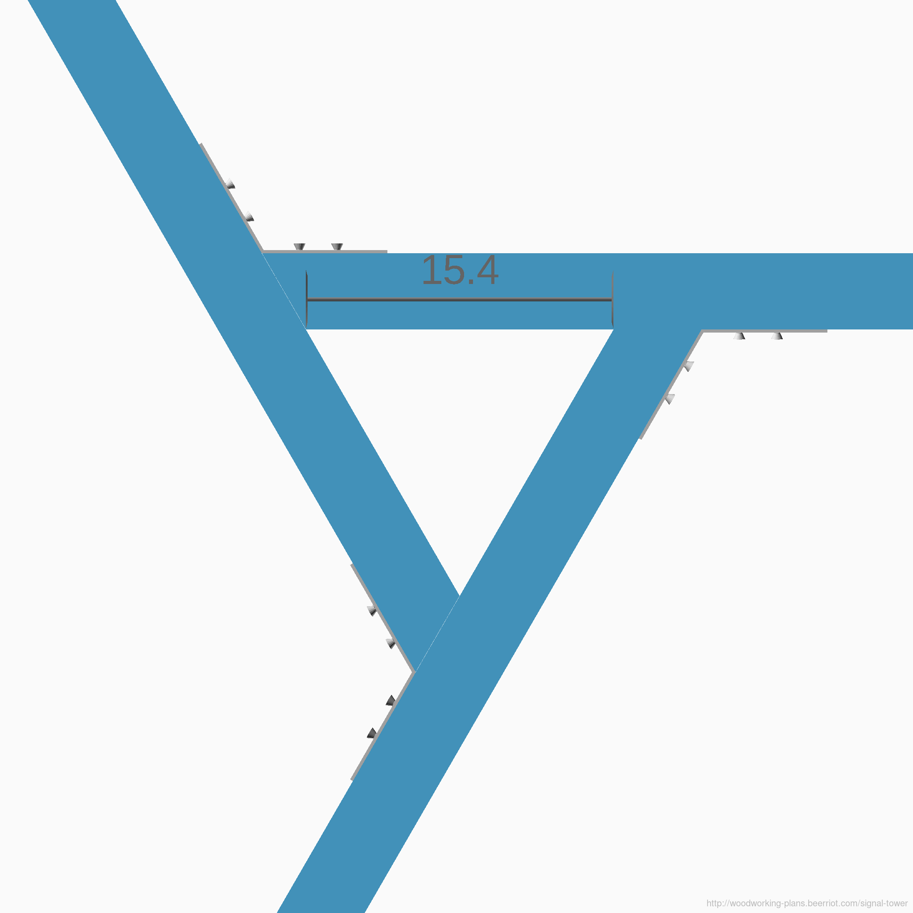

{kind=link}
{kind=link}
{kind=link}
{kind=link}
This tower is a relatively cheap and easy to build mounting point for antennas and satellite dishes. Standing 5.6m tall (18.5ft), it can easily raise a receiver above small obstructions. By loosening the bolt in each clamp, the pipe mast can be lowered to allow easier access for antenna/dish installation. The tower should be cabled to anchors secured in the ground to prevent it from tipping.
Note: all sizes in the diagrams are in centimeters, but the original design was done in inches. If you are more familiar with common metric sizes of these materials, please open an issue or submit a pull request to help me clean them up.
Building Guidelines
Full step-by-step build instructions may follow later. For now, a few tips and the parts diagrams should get some of you started.
The legs are designed to stand at 75° off horizontal. The top and bottom are cut to complement that angle (at 15°), so that the clamp sits flush at the top, and the feet sit flush on the ground.
The measurements for the bolt holes in the legs are given from the middle of the angled foot. Instead of trying to measure from that point, measure the same distance from the acute edge of the foot, then strike a 15° line across the leg at that point. Find the midpoint of that line, and drill there.
{kind=link}

Make the clamps out of three square layers of wood glued together. Orient the middle layer such that the grain runs perpendicular to the other two layers. Drill the hole for the clamp bolt through the side grain (not through the end grain) of the middle layer.
File one side of the pipe hole flat, and then push a t-nut into the bolt holt from the inside of the pipe hole. As the bolt screws into the t-nut from the outside, it will press against the pipe, holding the pipe in place.
If you're not using a well-calibrated drill press to make the bolt holes, then make sure to start the holes from the mating face of each component. That way, even if the holes aren't perfectly normal to each face, the point at which the faces meet is at the correct measured location.
{kind=link}

Each brace has a 30° mitre on one end. If your stock is long enough, you can save time by using each side of a 30° cut for a brace.
Assemble the braces for each elevation first. Then bolt all braces to one leg. Bolt the second leg to each brace, and then bolt on the third leg. This will be much easier than trying to screw the braces to each other after they have each been bolted to a leg.
Examples
Starlink dish elevator. Use a pipe with a 1.5 inch inner diameter as the mast. Drill a 1/2 inch hole centered two inches from the end of the pipe. Remove the spring buttons from the Starlink dish's stem, and secure a 1/2 inch bolt through it and the pipe holes to secure the dish in place.
Copyright © 2021 Bryan Fink
 This work is licensed under a Creative Commons Attribution 4.0 International License.
This work is licensed under a Creative Commons Attribution 4.0 International License.